Helena Mitasova, Anna Petrasova, Vaclav Petras
GIS714 Geosimulations NCSU
General expression for the agent $A_i$ evolution
$$ A_i^{t+\Delta t} = F(A_i^t, A_j^t, E^t, R) $$
Agent state (location, attributes) at time $t+\Delta t$ is a function of
Space is often tesselated into grid cells with initial environmental state.
Agents are modeled as grid cells, patches, points or oriented lines
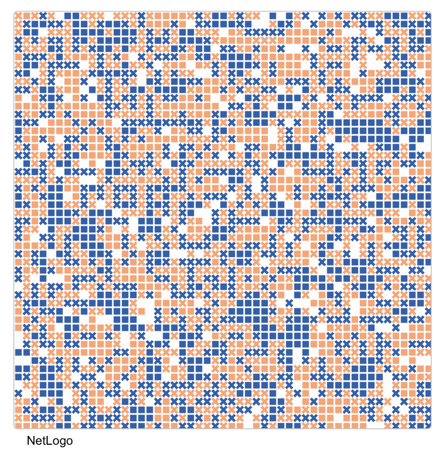 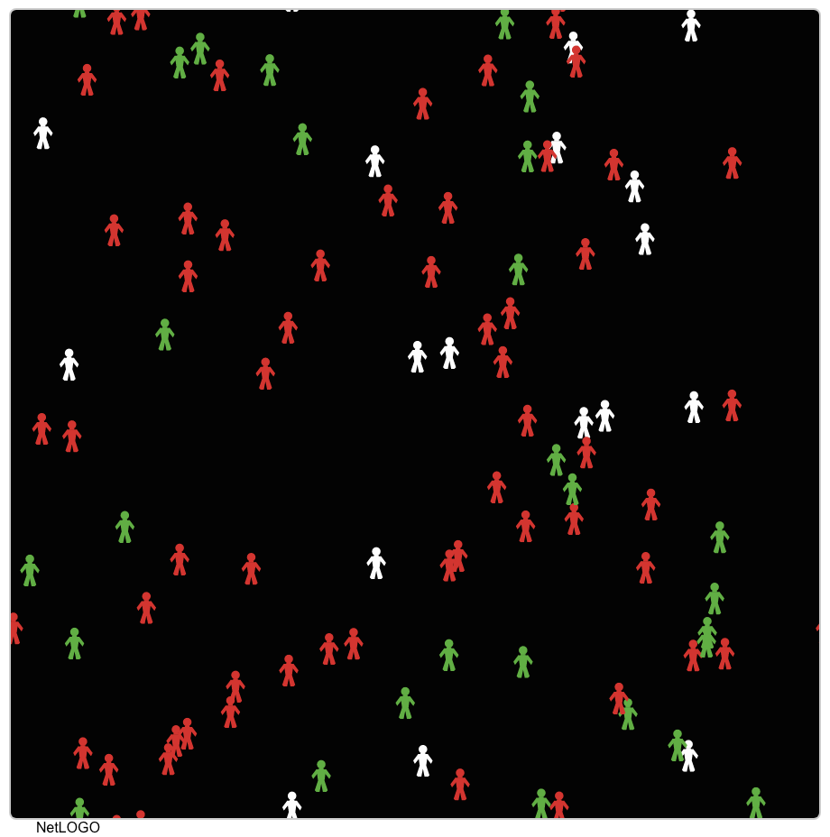
There is a continuum of models between CA and ABM. Some models can be interpreted as special cases of solutions to processes described by partial differential equations
Applies to both CA and ABM
Hatna and Benenson, 2012, The Schelling Model of Ethnic Residential Dynamics: Beyond the Integrated - Segregated Dichotomy of Patterns, JASSS 15(1)6, real-world application.
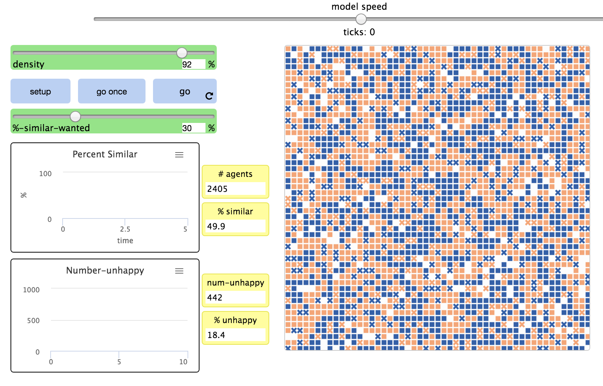
Wilensky, U. (1997). NetLogo Segregation model. Center for Connected Learning and Computer-Based Modeling, Northwestern University, Evanston, IL.
Hatna and Benenson, 2012, The Schelling Model of Ethnic Residential Dynamics: Beyond the Integrated - Segregated Dichotomy of Patterns, JASSS 15(1)6, real-world application.
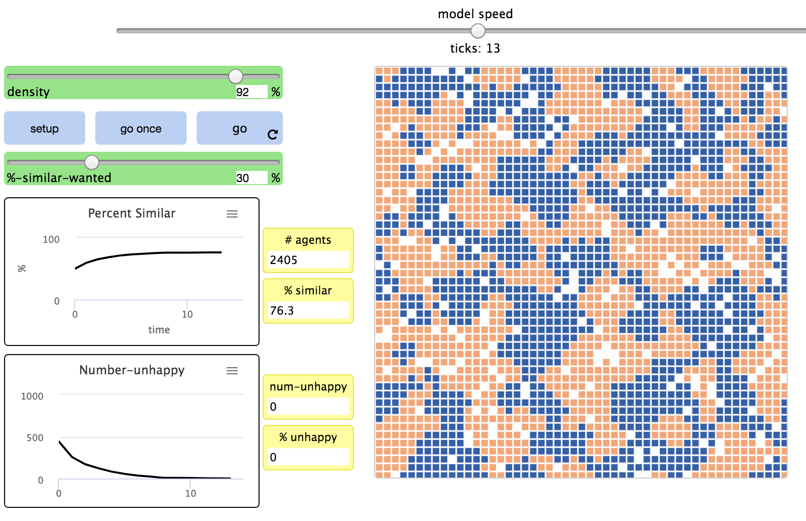
Wilensky, U. (1997). NetLogo Segregation model. Center for Connected Learning and Computer-Based Modeling, Northwestern University, Evanston, IL.
Hatna and Benenson, 2012, The Schelling Model of Ethnic Residential Dynamics: Beyond the Integrated - Segregated Dichotomy of Patterns, JASSS 15(1)6, real-world application.
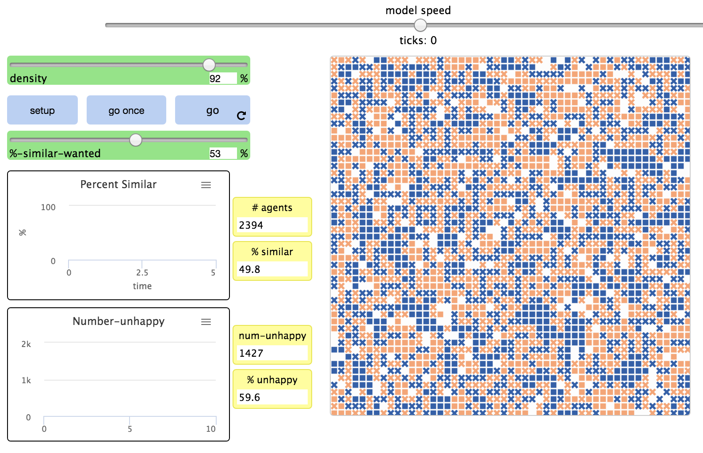
Wilensky, U. (1997). NetLogo Segregation model. Center for Connected Learning and Computer-Based Modeling, Northwestern University, Evanston, IL.
Hatna and Benenson, 2012, The Schelling Model of Ethnic Residential Dynamics: Beyond the Integrated - Segregated Dichotomy of Patterns, JASSS 15(1)6, real-world application.
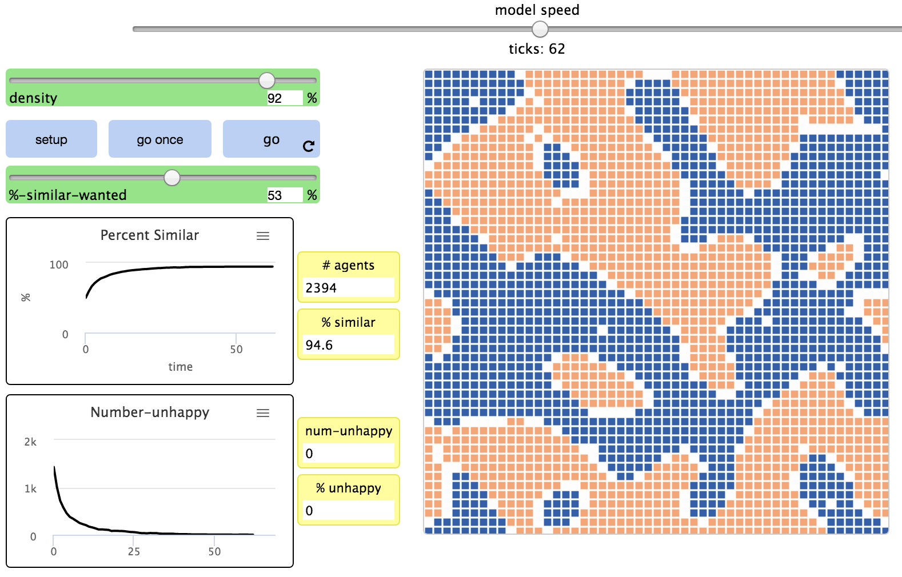
Wilensky, U. (1997). NetLogo Segregation model. Center for Connected Learning and Computer-Based Modeling, Northwestern University, Evanston, IL.
Hatna and Benenson, 2012, The Schelling Model of Ethnic Residential Dynamics: Beyond the Integrated - Segregated Dichotomy of Patterns, JASSS 15(1)6, real-world application.
Compare n = 20,30,45 %, also try to start with 25% empty and 60% neighbors
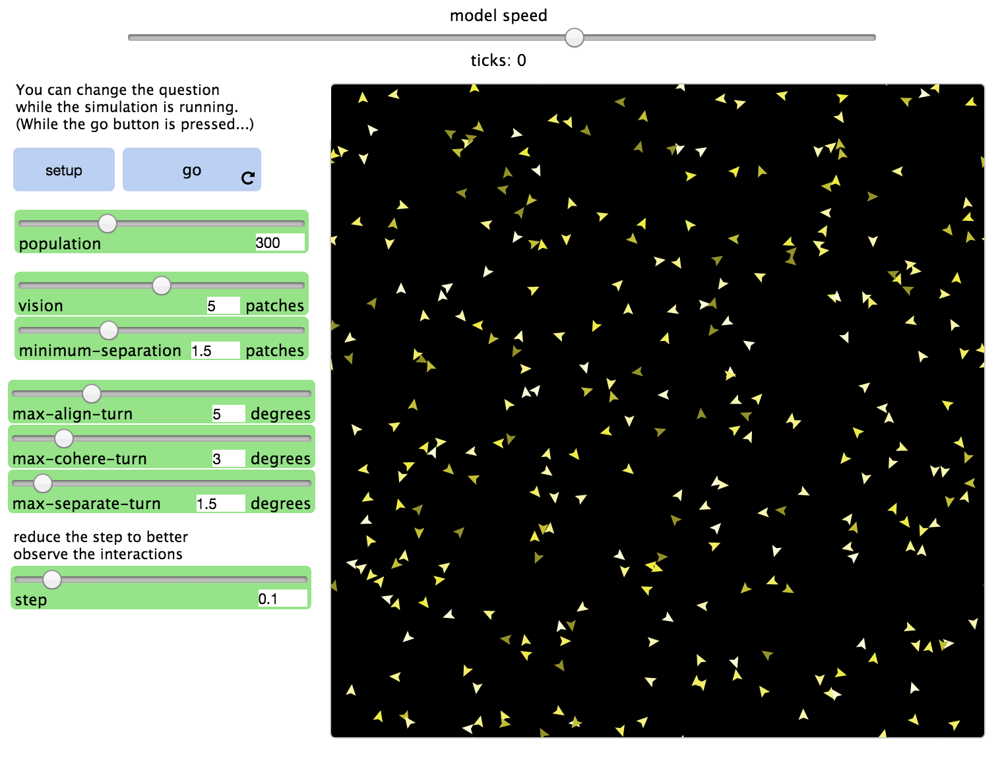
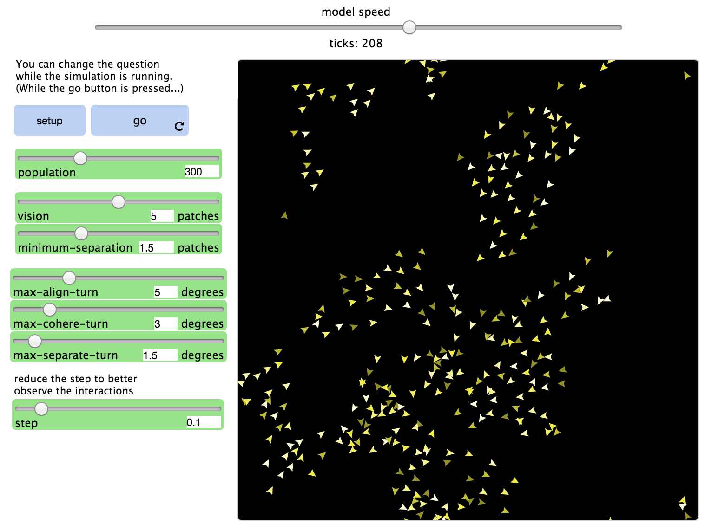
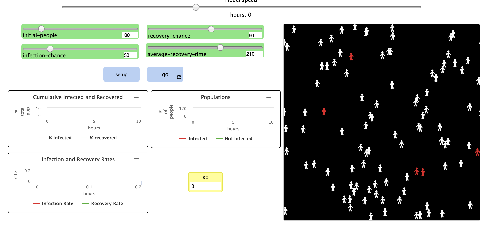
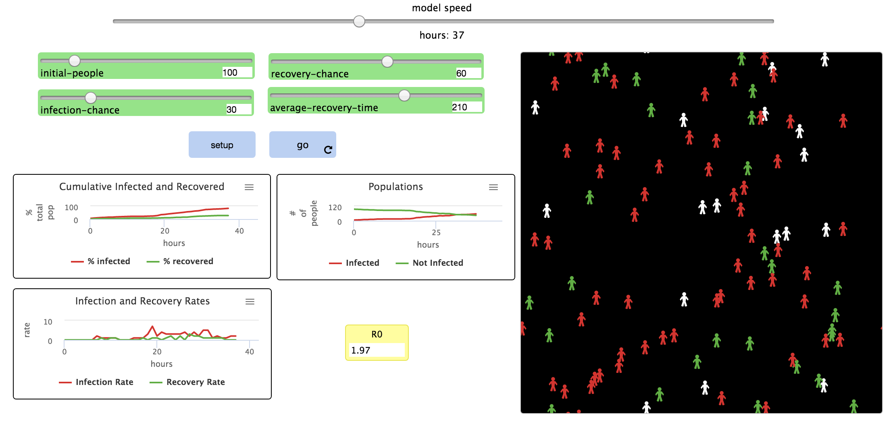
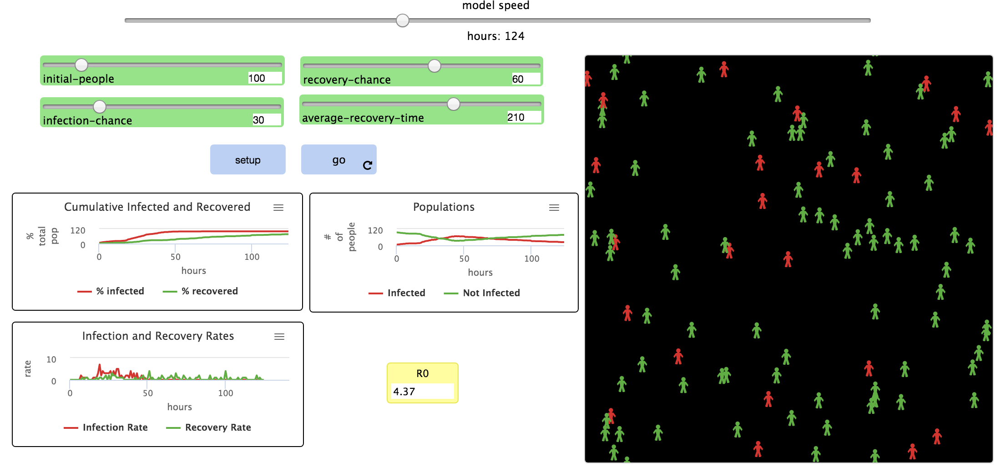
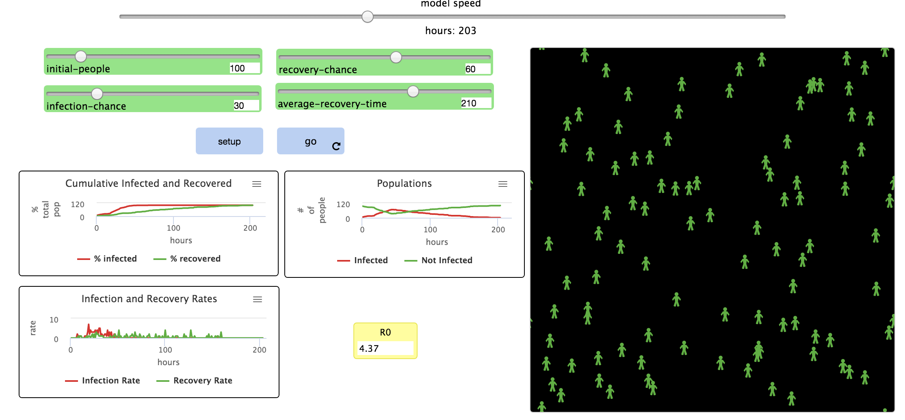
see also Epidemic model with travel
Robinson et al. 2018, Modelling feedbacks between human and natural processes in the land system, two (out of four) use ABM to model the human component
MedLanD simulates long-term change in socioecological systems: prehistoric Mediterranean societies
Agents employ decision rules to covert land to farming or grazing based on:
Agents initial state and rules are based on archeological record.
References: Ullah and Bergin, 2012; Mayer et al., 2006; Mayer and Sarjoughian, 2009; Barton et al., 2010a
Advantages
Limitations
{kind=link}